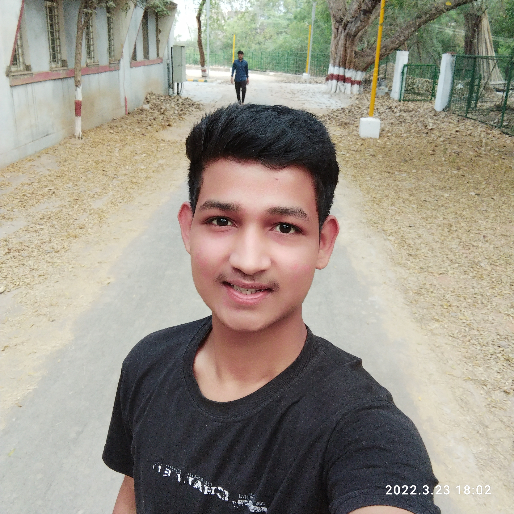

Himanshu Lodha
A 2nd Year Student in MITS Gwalior
With Major:Artificial Intelligence and Data Science(AIADS)
------------------ Biodata -----------------
| Father | Mother | DOB | Age | City | Name | Enrollment No. | >Branch | 1 year CGPE | Grade | Performance Grade |
|---|---|---|---|---|---|---|---|---|---|---|
| Avran Lodha | Seta Lodha | 11/04/2003 | 19 | Guna | Himanshu Lodha | 0901AD211020 | Artificial Intelligence and Data Science | 8.98 | A | A |